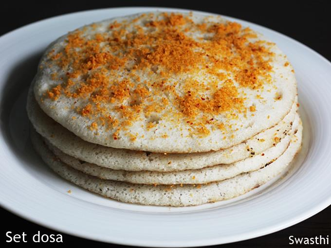

Set Dosa

Set dosa or sponge dosa is a variety of dosa from Karnataka that is crispy on the bottom and realy soft on the top. It is usually served in restaurants in sets of two or three and hence it got its name. In Tamilnadu, set dosa is served as pair of dosa and has a bright yellow colour. The dosa is usually cooked only on one side. It is very soft and spongy due to the addition of aval (poha). This gives a very nice taste and texture. The best combination with set dosa is vada curry but it also goes well with all types of kurma or chutney.
Ingredients
- Raw Rice - 2 cups
- Aval (Poha) - 1 cup
- Urad Dal - 1/2 cup
- Turmeric Powder - 1/2 tsp
- Salt - 1 tsp
- Oil - for making dosa
- Water - as needed
Instructions
Set Dosa
- Wash and rinse the raw rice. Soak it in enough water for about 4-5 hours.
- Also wash and soak the urad dal separately.
- Wash and soak the aval (poha) just 5 minutes before you start grinding.
- Start by grinding the urad dal in the grinder. When it becomes fluffy add the soaked rice and continue grinding.
- After couple of minutes of grinding, add the soaked aval and grind to a smooth batter. You can also grind everything in batches using a mixie jar.
- Take the batter in a big bowl and mix salt with it. The batter should be thick enough but thinner than idli batter.
- Allow it to ferment for 10-12 hours. It should ferment nicely. Once the batter ferments well, it is ready to make dosas.
- For making dosa, heat a tawa until it is hot enough. When you sprinkle some water, it should sizzle right away.
- Add turmeric powder to the batter and also some water of you want to adjust the consistency. Mix the batter nicely.
- Apply few drops of oil on the tawa and spread it with a kitchen towel. Pour a ladle full of batter on the hot tawa. It should spread by itself.
- Cover with a lid and cook for few minutes. You can see holes coming on top. Once you see the top of the dosa cooked, remove it off the tawa. You don't have to flip and cook it.